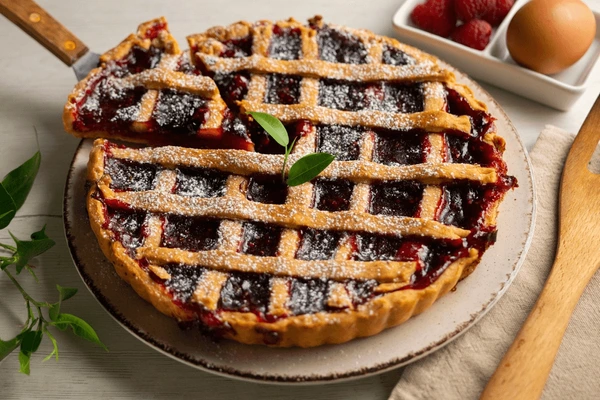

Crostata

Description
A crostata is a traditional Italian tart made with a buttery, crumbly pastry crust and filled with fruit jam or fresh seasonal fruit. Known for its rustic charm, the crostata often features a lattice crust on top and is baked until golden and fragrant. Whether served warm or at room temperature, it's a simple yet elegant dessert that pairs perfectly with a cup of coffee or a scoop of vanilla gelato.
Ingredients
- 2 ½ cups all-purpose flour
- ½ cup granulated sugar
- 1 cup (2 sticks) unsalted butter, cold and cut into pieces
- 1 large egg
- 1 egg yolk
- 1 teaspoon vanilla extract
- Pinch of salt
- 1 to 1 ½ cups fruit jam or preserves (e.g., apricot, raspberry, or cherry)
- Optional: zest of 1 lemon for added flavor
- Optional: powdered sugar for dusting
Steps
- Preheat the oven to 350°F (175°C).
- In a large bowl, mix the flour, sugar, salt, and lemon zest (if using).
- Add the cold butter pieces and work them into the flour mixture using a pastry cutter or your fingertips until the mixture resembles coarse crumbs.
- In a small bowl, beat the egg and egg yolk with the vanilla extract, then add to the flour mixture and knead gently until a soft dough forms.
- Wrap the dough in plastic wrap and refrigerate for at least 30 minutes.
- On a floured surface, roll out two-thirds of the dough and transfer it to a greased tart pan or baking dish, pressing it into the edges.
- Spread the jam evenly over the dough base.
- Roll out the remaining dough and cut it into strips to create a lattice pattern on top of the jam.
- Bake for 30–40 minutes or until the crust is golden brown.
- Let cool before serving. Optionally, dust with powdered sugar.
Home